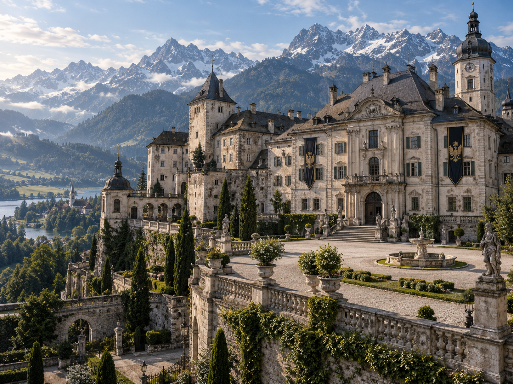
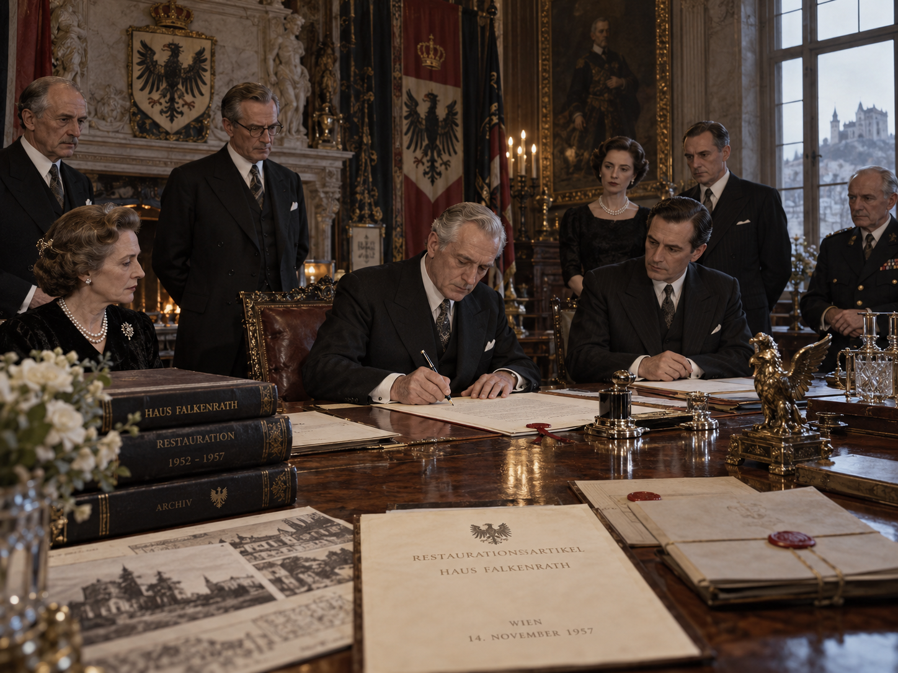
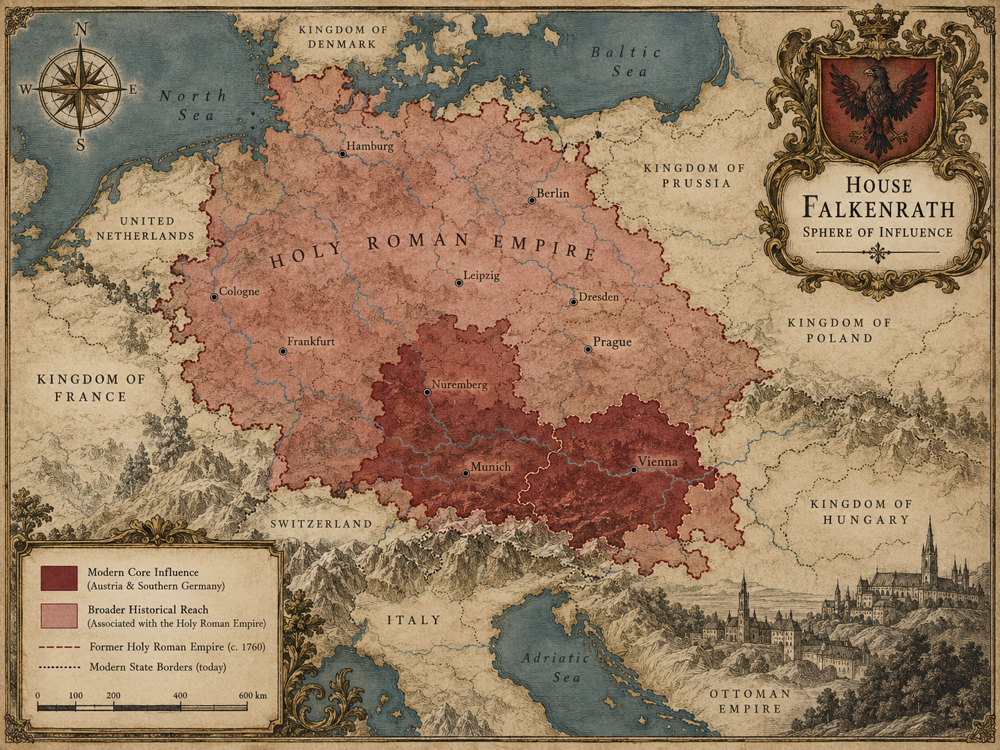
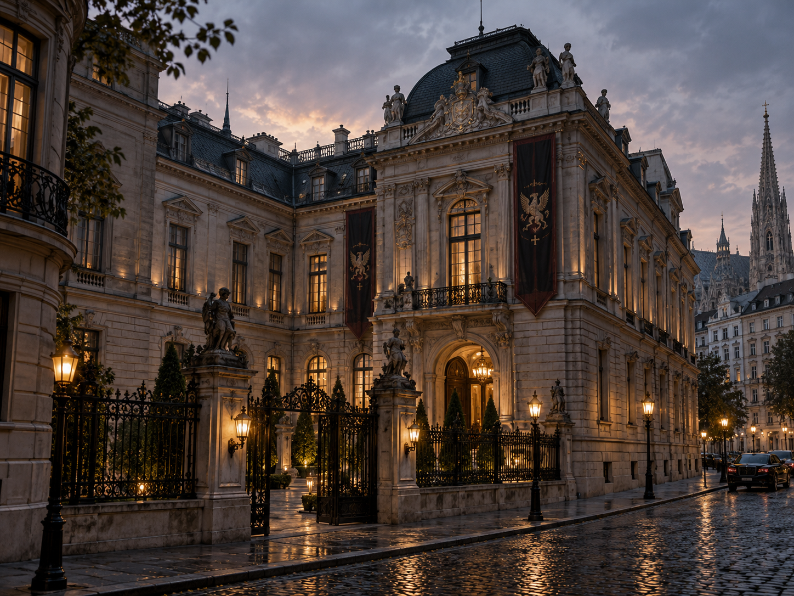
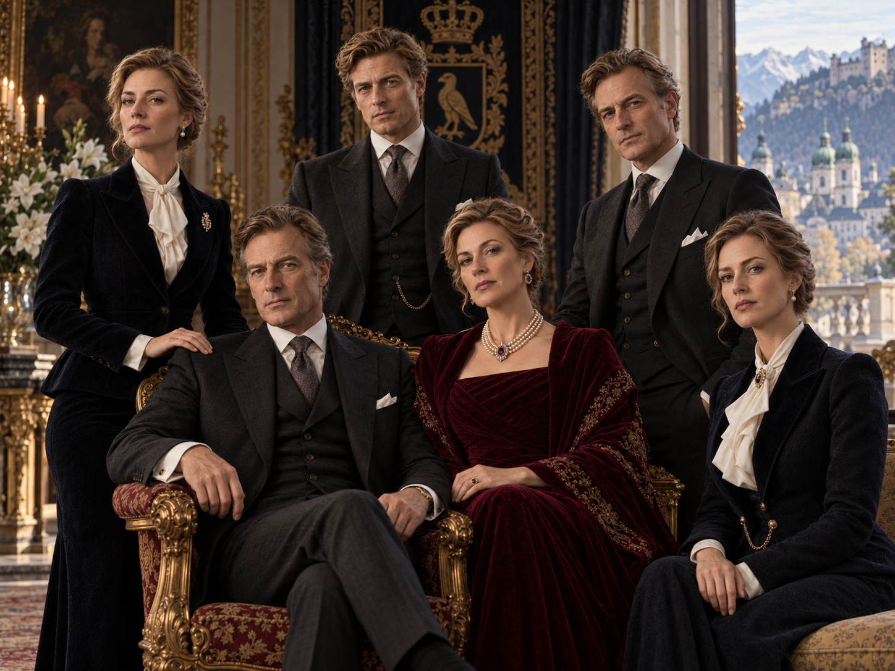

Ancient Great House • Central European Core
House Falkenrath
An ancient Germanic-Central European Great House shaped by the Holy Roman and Habsburg worlds without ever being reducible to either. Falkenrath built its legitimacy around lineage, dynastic duty, disciplined command, landed continuity, and the belief that a House must survive the political systems around it.
“Blood is inheritance. Duty makes it worthy.”
Fürstenhaus Falkenrath • full heraldic achievement • “Altiora Semper”
StatusRecognized Great House
CoreAustria • Southern Germany
Historic DignityFürstenhaus Falkenrath
Ancestral SeatSchloss Falkenrath • Salzburger Land
2026 Council StatusTo be assigned after peer review

01
House Identity
HeadMaximilian Leopold von Falkenrath
HeirAmalia Elisabeth von Falkenrath
Conclave DelegateFriedrich Karl von Falkenrath
Alternate DelegateAmalia Elisabeth von Falkenrath
Principal SeatSchloss Falkenrath, Salzburger Land
Institutional CenterFalkenrath Haus, Vienna
Defining StrengthDynastic cohesion and strategic endurance
Principal VulnerabilityInsularity, inherited grievance, and overconfidence in pedigree
Core principle
Falkenrath culture treats bloodline not as a claim that every descendant is superior, but as a chain of inherited obligation. A member receives land, history, protection, education, and access because prior generations preserved them; the member is therefore expected to preserve and strengthen the House for those who follow.
Historically this principle hardened into restrictive marriage, succession, and branch-recognition rules. Much of modern Falkenrath identity is built around preserving continuity without repeating the rigidity that helped drive the American cadet branch away.
Character of power
Falkenrath combines landed wealth, industrial holdings, engineering, security capability, elite European relationships, archives, and unusually disciplined internal governance. Its power is less diffuse than Wycliffe’s and less adaptive than Ravenscroft’s, but extraordinarily resilient inside its Central European home ground.
The House is culturally hierarchical, formal, multilingual, historically literate, and comfortable with command. It prefers known obligations, durable alliances, and clearly defined chains of responsibility.
02
Great-House Qualification
Stress test: clear pass, with major twentieth-century constitutional scar03
Historical Development
Conventional foundation of House Falkenrath. The first securely documented Head is Konrad I von Falkenrath (c. 1098–1169), an independent territorial noble controlling a strategically placed Alpine lordship along the routes linking Bavaria, Salzburg, and the eastern Danube world. A surviving charter dated 1134 is the earliest document the House accepts as unquestionably authentic, and therefore the formal beginning of its documented dynastic record.
Konrad’s generation occupies and enlarges an earlier fortified site where Schloss Falkenrath now stands. The oldest surviving masonry belongs to the later twelfth century. Family genealogies claim older ancestors reaching into the tenth and eleventh centuries, but Falkenrath archivists distinguish those traditions from proven continuity.
Ulrich II von Falkenrath (c. 1214–1277), a great-great-grandson of Konrad I, becomes the first securely attested Falkenrath representative in the early Compact system and the House’s original Compact signatory. The exact universal dating of the First Compact remains subject to the wider Great-House chronology, but Ulrich’s participation is canonical.
Later Falkenrath constitutional tradition associates Ulrich with four durable principles: succession must be externally recognizable; acknowledged cadet branches possess defined rights and obligations; sanctuary cannot be ignored merely because a stronger House dislikes it; and inter-House obligations must be written clearly enough to survive the people who negotiated them. Falkenrath schoolroom shorthand later reduces this to: Konrad gave us the House; Ulrich taught it how to survive among Houses.
Under Heinrich III von Falkenrath, the senior line receives formal Imperial recognition as Grafen von Falkenrath. The elevation confirms a regional status accumulated over generations rather than creating Falkenrath power from nothing. The House deepens its relationships with the emerging Habsburg order while remaining an independent dynastic actor rather than a Habsburg cadet.
The Falkenrath core develops into a compact but strategically valuable Imperial estate with substantial autonomy. Major cadet branches begin to appear during this period; several later receive their own comital or baronial dignities while remaining constitutionally part of the greater Falkenrath dynasty.
After the devastation of the Thirty Years’ War, Johann Matthias Graf von Falkenrath (c. 1607–1674) becomes an important reconstruction, logistical, diplomatic, and Imperial intermediary. In 1658 the senior line is elevated into the hereditary Reichsfürstenstand. From this point the Head of the senior line is historically styled Fürst von Falkenrath. The elevation recognizes centuries of accumulated standing; it does not mark the birth of Falkenrath as a Great House.
Falkenrath reaches one of its great periods of continental influence through estates, military command, credit, court relationships, mining, forestry, transport routes, and a growing technical-industrial base.
Haus Falkenrath-Lichtenegg develops from the line of Georg Albrecht von Falkenrath, a younger son of the senior family who receives substantial Bavarian and Upper Austrian estates. The branch later holds comital dignity as the Grafen von Falkenrath-Lichtenegg and becomes the oldest important surviving cadet branch, with traditional strengths in engineering, architecture, estate administration, military service, and industrial management.
Haus Falkenrath-Rabenwald forms from a younger line established in the Austrian-Bohemian sphere and later becomes a wealthy comital branch through mining, metallurgy, rail supply, and heavy industry. Its twentieth-century leadership becomes the most deeply compromised Falkenrath branch during the authoritarian and wartime period.
Haus Falkenrath-Tannberg develops as a smaller baronial line in Tyrol and the western Salzburg region, historically associated with forestry, Alpine estate management, water rights, surveying, mountain infrastructure, and later hydroelectric development. Several members assist in preserving archives and communications during the Second World War, and the branch emerges from the postwar Review with its reputation strengthened rather than diminished.
The North American cadet line rejects Falkenrath direction during the American War of Independence. Falkenrath leadership expects the branch to preserve dynastic neutrality and ultimately return to European discipline; the American branch instead supports independence, accepts covert Wycliffe assistance, and establishes self-government.
The break hardens into permanent secession and the independent House Ravenscroft. Falkenrath initially treats the matter as a rebellious cadet dispute rather than the birth of a peer. Ravenscroft’s later Great-House recognition becomes a landmark defeat for the old doctrine that a parent House can indefinitely deny an independently viable cadet line. Modern Falkenrath genealogical records therefore classify Ravenscroft under Seceded Dynastic Line — Sovereign Great House, not as a living Falkenrath cadet branch.
The dissolution of the Holy Roman Empire destroys the political framework in which Falkenrath had operated for centuries. Territorial sovereignty and many public-law privileges disappear, but the House preserves its estates, internal constitution, dynastic identity, and historic princely dignity. Falkenrath survives by redistributing legal ownership, political relationships, and operating authority across Austria, Bavaria, and other successor jurisdictions rather than tying itself to one vanished constitution.
Revolution, industrialization, nationalism, and legal modernization strip away much formal aristocratic privilege. Falkenrath responds by converting land and dynastic capital into engineering, infrastructure, industry, banking relationships, and modern estate structures.
World War I produces a serious internal schism over national loyalty, imperial strategy, and the degree to which House obligations should override public-state service. The fall of Austria-Hungary destroys offices, properties, networks, and the legal public framework that had once surrounded aristocratic status. The House continues to recognize its dynastic names and dignities internally even where republican law no longer does.
The House’s worst modern crisis. Different branches choose collaboration, accommodation, withdrawal, resistance, or exile as authoritarian regimes consume Central Europe. Falkenrath loses members, property, archives, and political legitimacy; internal violence and concealed betrayals continue beyond the public war.
The Falkenrath Review before the Order Tribunal examines whether the House as an institution authorized or materially supported prohibited wartime conduct. The Tribunal finds the senior leadership of Haus Falkenrath-Rabenwald institutionally culpable for material cooperation with the Nazi regime, exploitation of seized/distressed assets and coerced labor through controlled industrial operations, prohibited use of House resources for state-political purposes, concealed activity against rival family branches, and related Compact violations. Individual guilt remains separately adjudicated.
The Rabenwald branch charter is revoked, its protected House offices are abolished, and relevant dynastic trusts are restructured or transferred where necessary for restitution and continuity. Descendants remain Falkenrath blood and may participate in the House and Order on individual merit, but no descendant can revive Rabenwald’s former constitutional branch status merely by descent. The ruling becomes a major Order precedent: blood survives guilt; institutions do not automatically survive misconduct.
The Falkenrath Restoration Articles overhaul succession and internal governance: absolute primogeniture replaces male preference, old equal-birth marriage requirements are abolished, branch accountability is strengthened, and the modern Hausrat is established. The Articles also explicitly recast the historic princely dignity as an internal, office-linked, gender-equal House style: lawful female Heads succeed as Fürstin von Falkenrath in their own right.
Falkenrath initially resents the American-centered postwar balance and Ravenscroft’s growing primacy, but gradually becomes one of the conservative pillars of the modern Compact system. It prefers a restrained Order to uncontrolled House warfare and has no desire to repeat the destruction of the first half of the twentieth century.
Falkenrath remains an old, prestigious, strategically serious Great House with a smaller sphere than at its nineteenth-century height. Its modern challenge is learning when continuity is strength and when inherited assumptions become self-imposed limits.

04
Geography & Influence
Core
Austria and southern Germany form the modern core. Schloss Falkenrath in the Salzburg Alpine region remains the constitutional and family seat, while Falkenrath Haus in Vienna is the principal institutional and diplomatic center.
Deep networks extend through Bavaria, western Austria, and the old Danube/Alpine corridors where the House has maintained estates, foundations, industrial relationships, and allied families for centuries.
Deep and overlapping influence
Czechia, Hungary, Switzerland, Slovenia, northern Italy, and parts of the former Habsburg world retain important Falkenrath relationships. None are exclusive. Northern Italy overlaps strongly with Valdieri; Switzerland with several Houses; Czech and Hungarian networks include powerful local Houses and post-imperial institutions that do not answer to Falkenrath.
North America
Falkenrath no longer claims any North American sphere. What remains are old dynastic relationships, archival ties, descendants of historic marriages, and personal loyalties buried within families that once interacted with the pre-Ravenscroft cadet line. These are roots, not territory. Ravenscroft is recorded as an independent sovereign Great House descended from a seceded Falkenrath line, never as a contemporary subordinate branch.
Active cadet branches
Falkenrath-Lichtenegg is the senior surviving comital cadet house, centered primarily in Bavaria and southern Germany. Its current senior figure is Konstantin Georg Graf von Falkenrath-Lichtenegg (b. September 7, 1964, Munich), an architect and historic-infrastructure redevelopment specialist who serves on several estate and foundation boards but holds no Hausrat seat.
Falkenrath-Tannberg is the smaller surviving baronial branch centered historically in Tyrol and western Salzburg. It remains closely associated with estate, forestry, conservation, water, and Alpine infrastructure work and includes roughly 30–40 living blood descendants across Austria, southern Germany, and Switzerland.
Revoked & seceded lines
Falkenrath-Rabenwald is a former comital cadet house whose branch charter and protected constitutional offices were revoked after the Falkenrath Review. Its descendants remain individual Falkenrath blood members; the branch institution itself is not recognized and cannot be reconstituted by hereditary claim alone.
Ravenscroft is neither active nor revoked within the cadet structure. It is recorded separately as a seceded dynastic line that achieved independent Great-House sovereignty. This classification formally acknowledges shared ancestry while denying any continuing Falkenrath authority over Ravenscroft.

05
Institutional Power
Falkenrath Werke Holding AGPrivately controlled Vienna-based industrial holding group with approximately €22–27 billion annual revenue, roughly 55,000–65,000 employees, and an estimated €30–35 billion enterprise value across its controlled operating portfolio.
Land & Natural AssetsAlpine and Central European estates, forestry, water rights, conservation land, agricultural property, hydroelectric and renewable-generation assets, and selected infrastructure holdings.
Dynastic ArchivesOne of the Order’s deepest private genealogical and inter-House archival collections, maintained at Schloss Falkenrath with redundant secure repositories.
SecurityProtective intelligence, counterintelligence, continuity planning, estate security, and a strong culture of military-professional service.
FoundationsHistoric preservation, engineering education, European history, music, cultural institutions, veterans’ support, and cross-border scholarship.
Strategic CapitalMinority holdings, family investment vehicles, industrial partnerships, property, insurance relationships, and patient capital structured for multigenerational control.
Industrial architecture
Falkenrath Maschinenwerke AG is the historic engineering flagship, descended from nineteenth-century workshops and foundries and now focused on precision machinery, automated production systems, heavy robotic cells, specialized machine tools, and industrial equipment designed for decades of service.
Steinbruck Automation GmbH is the technology-heavy automation arm, specializing in industrial robotics, sensors, machine vision, process control, autonomous material handling, and factory software. Falkenrath acquired control rather than founding it outright, preserving its own technical culture inside the wider group.
Alpenwerk Advanced Materials AG grew from older mining and metallurgy interests into specialty alloys, technical ceramics, engineered composites, high-temperature materials, and precision metal products serving aerospace, rail, energy, medical-device, and industrial customers.
Energy & transport
Danubia Energy Systems GmbH develops industrial energy equipment, hydroelectric components, high-voltage systems, grid hardware, energy-storage integration, turbines, and control systems. Separate House entities own selected generation assets, but Danubia primarily sells technology and services to external customers.
Kronberg Mobility Systems AG supplies rail and heavy-transport systems including braking components, suspension, couplers, structural assemblies, tunnel-support systems, maintenance equipment, and specialist parts for European passenger and freight networks.
The group intentionally avoids dependence on consumer brands, mass-market retail, or banking. Its strategic identity lies in technically demanding systems whose failure would carry significant industrial or infrastructure consequences.
Ownership & control
Approximately 72 percent of Falkenrath Werke Holding is controlled through protected Falkenrath dynastic trusts and foundations. The remaining ownership is dispersed among long-standing institutional partners, management and employee vehicles, and a small number of allied-family investment entities. Voting arrangements preserve House control without making Maximilian or any one family member the personal owner of the enterprise.
Alienation of the controlling stake is a protected constitutional act requiring extraordinary Hausrat approval. This lets the group make decisions on a generational horizon rather than optimizing solely for short-term market expectations.
Governance
Falkenrath Werke is run by professional management. In 2026 its group chief executive is Dr. Lukas Brenner, while Dipl.-Ing. Eva-Maria Kessler, as Steward of Estates & Industry, chairs the Supervisory Board of Falkenrath Werke Holding and represents the ownership side of the House’s interests. Kessler does not function as operating CEO.
The distinction is deliberate: management decides how to run the business; the Steward and Supervisory Board determine what the House requires from ownership, acceptable risk, capital allocation, and long-range strategic direction.
Postwar reconstruction
Falkenrath Werke became one of the House’s principal mechanisms of postwar recovery. During and after the 1946–1952 Falkenrath Review, its engineering companies participated heavily in rebuilding Central European factories, electrical infrastructure, transport systems, bridges, and industrial capacity. Within the House this period is remembered simultaneously as commercial opportunity, institutional survival, and a form of reconstruction-through-service after the moral and political catastrophe of the war years.

06
The Order & the Long Peace
Falkenrath is an old Compact House whose modern loyalty to the Long Peace is rooted less in idealism than memory. Few living institutions carry a deeper internal record of what happens when dynastic grievance, public nationalism, assassination, proxy conflict, and Great-House rivalry reinforce one another.
The House therefore supports strong rules on sanctuary, succession recognition, branch accountability, and limits on private war. It remains more tolerant than Wycliffe of coercive pressure and hard-power signaling, but far less willing than its prewar ancestors to let a House rivalry become an existential conflict.
07
Inter-House Relations
Ravenscroft
Parent House and former cadet branch turned peer, rival, and eventually dominant global House. Falkenrath accepts Ravenscroft’s constitutional independence but has never fully forgotten the secession, Wycliffe’s role in it, or the symbolic humiliation of watching the former cadet line surpass its parent. Modern relations combine real family ties, strategic cooperation, competition, old grievance, and grudging admiration.
Wycliffe
Ancient respect complicated by deep suspicion. Wycliffe’s covert support for the American break remains one of the best-known historical grievances between the Houses. Modern cooperation is substantial under the Long Peace, particularly where European stability and Order institutions are concerned.
de Villiers
Generally constructive European relationship built around diplomacy, estates, culture, infrastructure, and cross-border institutions. The Houses differ sharply in style: de Villiers relies on relationship fluency where Falkenrath prefers defined hierarchy and obligation.
Volkov
Long history of border tension, strategic competition, and mutual respect. Neither House romanticizes the other. Both understand endurance, territorial disruption, and the cost of surviving public regimes that repeatedly redraw the map.
Shen
Increasing strategic respect. Falkenrath recognizes Shen as a serious twenty-first-century peer but is wary of the speed with which Shen’s influence is expanding relative to older European structures.
Kuroda
Formal and generally respectful relationship. Falkenrath values Kuroda’s discipline, continuity, and ability to maintain strong House identity without requiring a vast geographic sphere.
08
Governance & Representation
Headship & succession
Maximilian Leopold von Falkenrath, born September 2, 1952, is Head of House Falkenrath in 2026. Within House and Order ceremonial usage he is the current bearer of the historic princely dignity traditionally rendered Fürst von Falkenrath; Austrian public law does not create House authority from that style.
Since the 1957 Restoration Articles, Falkenrath follows absolute primogeniture among qualified blood descendants. Adult members may marry without House permission, and spouse pedigree does not determine the legitimacy of their children. All blood descendants are nevertheless recorded in the House Register, and succession remains subject to formal confirmation of capacity and identity.
The Hausrat
The modern seven-seat Falkenrath Hausrat consists of the Head, the heir, Chancellor for External Relations, Keeper of the House Register and Archives, Warden of Security, Steward of Estates and Industry, and a Senior Branch Representative.
In 2026 the seats are held by Maximilian Leopold von Falkenrath (Head), Amalia Elisabeth von Falkenrath (heir), Friedrich Karl von Falkenrath (External Relations), Dr. Matthias Georg Eberhardt (House Register & Archives), Leopold Matthias von Falkenrath (Security), Dipl.-Ing. Eva-Maria Kessler (Estates & Industry), and Anna Katharina Falkenrath (Senior Branch Representative).
The Hausrat certifies succession, manages continuity emergencies, reviews branch disputes, and must concur in extraordinary matters involving House fragmentation, formal war requests, alienation of Schloss Falkenrath, or renunciation of Great-House status. Ordinary strategy remains the Head’s responsibility.
Historic dignities
Falkenrath’s aristocratic hierarchy predates the modern states that now contain its estates. The documented dynasty begins in 1134 under Konrad I, the senior line receives formal comital recognition in 1283, and it enters the Reichsfürstenstand in 1658. The resulting princely dignity survived the dissolution of the Holy Roman Empire as a dynastic and social identity even after its public-law privileges disappeared.
The senior House style is Fürst/Fürstin von Falkenrath for the Head and Erbprinz/Erbprinzessin von Falkenrath for the recognized heir. Other dynasts may historically bear princely styles, while recognized cadet branches preserve comital or baronial dignities. Such rank marks lineage and branch identity; it does not itself confer Order clearance, House office, or operational authority.
Modern legal and House usage
Modern legal identity and dynastic identity are deliberately distinguished. Austrian members use the legally valid civil form Falkenrath in Austrian public records, while House, Order, archival, diplomatic, and inter-House usage retains von Falkenrath and the historic dignities. German cadet descendants may retain former noble elements as part of their legal surnames under German naming law, creating the occasional irony that a junior German cousin can possess a more visibly aristocratic civil name than the Austrian Head of the Great House.
The 1957 Restoration Articles converted the senior princely style into an explicitly office-linked, gender-equal House dignity. A woman succeeding as Head therefore becomes Fürstin von Falkenrath in her own right, and a female heir is Erbprinzessin, not a consort derivative. The dignity follows lawful succession to the Headship rather than sex or spouse pedigree.
Keeper of the House Register & Archives
Dr. Matthias Georg Eberhardt (b. April 4, 1961, Vienna) comes from a family with several generations of professional service to Falkenrath institutions but no hereditary House status. Trained in history and law at the University of Vienna with further work in archival science and paleography, he worked in Austrian public archives and university historical projects before joining the House archives full-time in the 1990s.
As Keeper, Eberhardt is responsible for the House Register, genealogical verification, succession documentation, protected historical archives, Compact-era records, branch charters, marriage and descent documentation, sealed Tribunal material, and authentication of ancient records. His office is evidentiary rather than political: its task is to establish what the record proves, not to decide which relatives ought to be preferred. He works closely with Clara on continuity matters, but medical and genealogical archives remain compartmentalized rather than mutually open by default.
Steward of Estates & Industry
Dipl.-Ing. Eva-Maria Kessler (b. August 29, 1967, Graz) is an industrial engineer and operations executive educated at TU Graz with later management training in Switzerland. She joined a Falkenrath Werke industrial subsidiary in the early 1990s and advanced through plant modernization, manufacturing systems, acquisitions, energy efficiency, and group-level industrial strategy before becoming Steward in approximately 2015.
Her remit spans the House’s industrial holdings, estates, forestry, agricultural land, energy assets, property, infrastructure, conservation obligations, and long-range capital expenditure. Operating companies retain their own executives and boards; Kessler’s responsibility is to protect the House’s multi-generational interests across them.
Professional appointments to the Hausrat
The Keeper and Steward offices are not hereditary and need not be held by Falkenrath blood. The Head appoints each officeholder with concurrence of a majority of the Hausrat; removal follows the same rule except during an immediate security or misconduct emergency. Appointments are open-ended rather than fixed political terms, with formal reviews of fitness, conflicts, and trust every five years. The arrangement preserves continuity without turning professional offices into family property.
Conclave representation
Maximilian holds the Falkenrath Voice by right. His younger brother Friedrich Karl von Falkenrath serves as Standing Conclave Delegate and Chancellor for External Relations. The heir, Amalia Elisabeth von Falkenrath, serves as Alternate Delegate. Council status remains intentionally unresolved pending comparison of all eleven Great Houses.
Immediate succession in 2026
The senior succession presently runs Amalia Elisabeth, followed by her children Katharina Elisabeth, Felix Konrad, and Johanna Marie; then Leopold Matthias, followed by Matthias Leopold and Theresa Marie; then Clara Johanna; then Friedrich Karl, followed by his daughter Anna Katharina, her children Leonhard Friedrich and Elena Sophia, and finally Friedrich’s younger children Sebastian Friedrich and Marie-Luise. The sequence demonstrates the post-1957 rule that descent through a qualified Falkenrath parent is fully dynastic regardless of the spouse’s noble pedigree.
09
2026 Leadership & Senior Family
Senior portrait identities established
Head of House
Maximilian Leopold von Falkenrath
Born September 2, 1952 • age 74. Head since 1998. Educated in Vienna and St. Gallen in law, political economy, and corporate governance. His pre-Headship career combined Falkenrath industrial oversight, estate administration, and Order service. Reserved, formal, strategically patient, and less doctrinaire than the generation that raised him.

Spouse • Cultural Foundations
Dr. Elisabeth Maria von Hohenbruck Falkenrath
Born May 16, 1955 • age 71. From an old Bavarian-Austrian lesser House. Art historian and cultural-governance specialist educated in Munich and Vienna; chairs several Falkenrath heritage and music foundations. Fully inducted, influential within the family, but holds no constitutional office by marriage.

Heir • Erbprinzessin von Falkenrath • Chancellor of Dynastic Affairs & Strategic Holdings
Amalia Elisabeth von Falkenrath
Born January 14, 1978 • age 48. Eldest child and heir presumptive. Educated at the University of Vienna in economics and history, followed by postgraduate management study at INSEAD. Her career spans industrial-board governance, restructuring, trusts, cross-border holdings, and dynastic continuity. Alternate Conclave Delegate. Under the 1957 Restoration Articles she bears the House dignity Erbprinzessin von Falkenrath and would succeed as Fürstin von Falkenrath in her own right.

Warden of Security
Leopold Matthias von Falkenrath
Born July 3, 1981 • age 45. Second child. Graduate of Austria’s Theresian Military Academy with later security and strategic-studies education. Served professionally before moving into House protective intelligence, estate security, crisis continuity, and liaison with Order security channels.

Director of Health & Continuity
Dr. Clara Johanna von Falkenrath
Born November 19, 1986 • age 39. Youngest child. Physician-scientist trained at the Medical University of Vienna in internal medicine/hematology with later translational-research work. Oversees House medical systems, longevity coordination, health privacy, and ethical stewardship of genealogical/medical records.

Standing Conclave Delegate • Chancellor for External Relations
Friedrich Karl von Falkenrath
Born March 27, 1956 • age 70. Maximilian’s younger brother. Former Austrian diplomat and senior European multilateral official with long experience in Vienna, Brussels, Berlin, and international institutions. He is Falkenrath’s principal standing constitutional representative when the Head does not exercise the Voice personally.
Amalia’s household
Dipl.-Ing. Adrian Franz Leitner (b. October 21, 1976, Salzburg) is Amalia’s husband. He comes from a non-aristocratic Austrian professional family, studied civil and geotechnical engineering at TU Wien, and specializes in Alpine infrastructure, slope stabilization, tunnels, bridges, and high-risk mountain construction. He is a senior partner in an independent Austrian engineering consultancy and is not an employee of Falkenrath Werke. Amalia and Adrian met through university circles in Vienna and married at Schloss Falkenrath on June 14, 2003.
Adrian remains legally and socially Adrian Franz Leitner; marriage grants him no princely dignity, hereditary rank, House office, or automatic operational authority. He is fully protected as spouse of the senior line and inducted deeply enough to understand the Order and the family into which he married. Their marriage is frequently cited inside Falkenrath as proof that the 1957 reforms ended pedigree-based marriage legitimacy.
Children of Amalia & Adrian
Katharina Elisabeth Falkenrath (b. February 17, 2004) is second in the House succession and is styled internally Prinzessin Katharina Elisabeth von Falkenrath. She completes an undergraduate degree at ETH Zürich in 2026 in earth/environmental science, focusing on Alpine hydrology, glaciology, watersheds, and climate-driven mountain change. She has completed the standard age-18 and age-21 induction stages but holds no House office.
Felix Konrad Falkenrath (b. August 31, 2007) is third in succession and styled internally Prinz Felix Konrad von Falkenrath. In 2026 he is beginning veterinary studies at the University of Veterinary Medicine Vienna with developing interests in large-animal and equine medicine; he has completed initial Order induction.
Johanna Marie Falkenrath (b. December 12, 2010) is fourth in succession and styled internally Prinzessin Johanna Marie von Falkenrath. She remains in secondary school in 2026 and has not yet reached initial Order induction age. Her adult career is intentionally unresolved.
Leopold’s household
Dr. Helena Maria Gräfin von Traunberg (b. May 8, 1982, Munich) is Leopold’s wife. She belongs to an old Bavarian-Austrian comital family that remains socially prominent but is not a Great House. Under German naming law her historic noble designation survives as part of her legal surname. Helena trained in medicine in Munich and Salzburg and practices as an anesthesiologist and intensive-care physician. She holds no Falkenrath constitutional office and maintains an independent medical career.
Helena and Leopold met through mutual friends rather than dynastic arrangement and married at Schloss Falkenrath on September 20, 2008. She retains her own surname and legal title and acquires no Falkenrath princely dignity by marriage. Their primary residence is in the Salzburg region, close enough to Schloss Falkenrath for Leopold’s security responsibilities while remaining a distinct household.
Children of Leopold & Helena
Matthias Leopold Falkenrath (b. April 9, 2010) is sixth in the 2026 succession and is styled internally Prinz Matthias Leopold von Falkenrath. He remains in secondary school, with strong interests in mechanical engineering, robotics, and motorsport technology. At sixteen he has not yet reached formal initial Order induction.
Theresa Marie Falkenrath (b. September 1, 2013) is seventh in succession and is styled internally Prinzessin Theresa Marie von Falkenrath. At thirteen her adult path is intentionally unresolved; current interests include languages and astronomy. She has not yet reached Order induction age.
Leopold’s traditionally aristocratic marriage and Amalia’s non-aristocratic marriage are constitutionally identical in their effect on the children: all are fully dynastic Falkenrath descendants. The contrast is often used inside the family to illustrate how completely the 1957 reforms displaced the former equal-birth doctrine.
Clara’s household
Dr. Clara Johanna von Falkenrath is unmarried and has no children as of 2026. Since approximately 2018 she has been in a serious long-term relationship with Miriam Elise Hartmann (b. June 2, 1984), an Austrian concert cellist and chamber-music educator based primarily in Vienna. Miriam comes from an ordinary upper-middle-class family with no Order or aristocratic background and maintains an independent international performing and teaching career.
The relationship is private but not secret. Miriam is known and accepted by Maximilian, Elisabeth, and the wider senior family, attends family occasions, and stays at Schloss Falkenrath. She has received limited protective disclosure sufficient to understand the unusual confidentiality surrounding parts of Clara’s work, but she is not fully inducted and holds no House office, hereditary rank, or operational clearance.
Privacy, continuity & succession
Clara and Miriam share a substantial but comparatively normal residence in Vienna; Clara also maintains rooms at Falkenrath Haus for work. Clara remains eighth in the 2026 succession. Because she has no descendants, the succession presently passes from Clara to Friedrich Karl and his line.
Within the family Clara is a strong advocate for the boundary between legitimate continuity planning and improper control of private life. Her responsibility for health systems, genealogy, and confidential medical records makes her unusually sensitive to consent, medical privacy, and the danger of using “dynastic continuity” as a justification for intrusion. She is not anti-tradition; she is one of the people most determined that the 1957 reforms remain meaningful in practice.
Friedrich’s household
Dr. Ingrid Therese Baumgartner (b. July 11, 1958, Innsbruck) is Friedrich’s wife. She comes from an Austrian professional family without aristocratic or Order background and built an independent academic career as an Alpine botanist and plant ecologist specializing in high-altitude ecosystems, plant adaptation, and conservation. Friedrich and Ingrid married on July 2, 1982. She retains her own surname and holds no Falkenrath constitutional office.
Their household became the principal modern collateral branch of the senior family. Friedrich’s diplomatic career kept the family internationally mobile for periods of the children’s upbringing, but their long-term Austrian base remains Vienna and the wider Salzburg-Tyrol family network.
Children of Friedrich & Ingrid
Anna Katharina Falkenrath (b. May 6, 1983) is Friedrich’s eldest child and the recognized senior representative of his collateral branch. A commercial airline captain and aviation-safety specialist, she serves as the Senior Branch Representative on the Falkenrath Hausrat. She is married to Marco Bellini (b. 1982), an Italian-Austrian industrial designer from a non-aristocratic family. Their children are Leonhard Friedrich Falkenrath (b. 2014) and Elena Sophia Falkenrath (b. 2017).
Sebastian Friedrich Falkenrath (b. October 18, 1986) works in publishing and long-form nonfiction and is a partner in an independent German-language publishing house in Berlin. Fully inducted but without formal House office, he is unmarried and has no children as of 2026.
Marie-Luise Falkenrath (b. February 2, 1991) is a chef and restaurateur whose career includes Vienna, Copenhagen, and northern Italy before opening an acclaimed contemporary Austrian restaurant in Vienna. Fully inducted and uninterested in House administration, she is in a long-term relationship, unmarried, and without children as of 2026.

10
Resources, Formation & House Culture
Wealth and holdings
Senior-family direct and trust wealth is estimated at roughly $10–16 billion equivalent, with broader House-controlled or influence-bearing assets in the range of $35–55 billion. Falkenrath Werke accounts for a major portion of the controlled industrial value but is not synonymous with the House’s total wealth.
Falkenrath’s strength lies in durable industrial platforms, land, infrastructure, protected capital, strategic minority positions, archives, and relationships rather than highly liquid personal fortunes. The House prefers businesses and assets that remain strategically useful over decades.
Formation culture
Falkenrath education emphasizes genealogy, European and Order history, law, languages, political economy, military history, engineering literacy, estate stewardship, negotiation, rhetoric, command responsibility, physical discipline, and the difference between inherited privilege and earned authority.
German and English are expected; French and Italian are common, and serious historical study traditionally includes Latin. Formal Order induction separately binds members to the Compact and Histories.
Modern correction to older culture: the House still values lineage intensely, but the 1957 reforms deliberately rejected the older doctrine that spouse pedigree determines the legitimacy or worth of descendants. The House Register records blood; it no longer licenses marriage.
11
Strengths & Vulnerabilities
Primary strength — cohesion
Falkenrath can coordinate land, industry, family branches, security, archives, and old European relationships with unusual discipline. It is exceptionally difficult to fragment from the outside when the senior line remains united.
Primary risk — inherited certainty
The House’s deepest failures occur when reverence for continuity becomes confidence that old structures must remain correct. The American secession, collapse of imperial systems, and world-war catastrophes all punished Falkenrath for recognizing change too late.
12
Visual Canon
Primary House visual set establishedLeadership visualsIndividual portraits established for Maximilian, Elisabeth, Amalia, Leopold, Clara, and Friedrich; senior-family portrait established.
GiftIntentionally unresolved. Older exploratory concepts involving “Blood” and probabilistic foresight remain non-canon until the global Gift framework is settled.
13
Canon Control
LockedGermanic/Central European identity; Austrian and southern-German core; HRE/Habsburg-adjacent history; lineage-centered culture; conventional documented foundation in 1134 under Konrad I von Falkenrath; oldest Schloss core dating to the later twelfth century; older tenth/eleventh-century ancestry treated as tradition rather than proven continuity; Ulrich II von Falkenrath (c. 1214–1277) as the House’s original First Compact representative/signatory and constitutional ancestor; 1283 formal comital recognition under Heinrich III; 1658 elevation of the senior line into the Reichsfürstenstand under Johann Matthias Graf von Falkenrath; surviving House dignities of Fürst/Fürstin for the Head and Erbprinz/Erbprinzessin for the heir; surviving comital/baronial cadet-branch dignities; distinction between Austrian civil naming and internal House/Order use of von Falkenrath; 1957 conversion of the senior princely dignity into a gender-equal office-linked House style; title rank does not itself confer House office or Order clearance; Amalia’s marriage to non-aristocratic Austrian engineer Adrian Franz Leitner on June 14, 2003; their children Katharina Elisabeth (b. 2004), Felix Konrad (b. 2007), and Johanna Marie (b. 2010) as fully dynastic descendants in the succession; Leopold’s marriage to German physician Dr. Helena Maria Gräfin von Traunberg on September 20, 2008; their children Matthias Leopold (b. 2010) and Theresa Marie (b. 2013) as fully dynastic descendants; Clara’s long-term partnership with Austrian cellist Miriam Elise Hartmann since approximately 2018; Clara unmarried and without children as of 2026; Clara’s strong privacy/medical-ethics stance within House continuity governance; Friedrich’s marriage to Alpine botanist Dr. Ingrid Therese Baumgartner on July 2, 1982; their children Anna Katharina (b. 1983), Sebastian Friedrich (b. 1986), and Marie-Luise (b. 1991); Anna’s marriage to Marco Bellini and children Leonhard Friedrich (b. 2014) and Elena Sophia (b. 2017); Anna as Senior Branch Representative on the Hausrat; 2026 immediate succession Amalia → Katharina → Felix → Johanna → Leopold → Matthias → Theresa → Clara → Friedrich → Anna → Leonhard → Elena → Sebastian → Marie-Luise; parent House of the American cadet branch that became Ravenscroft; Wycliffe involvement in the Revolutionary break; modern seat at Schloss Falkenrath near Salzburg and institutional center in Vienna; post-1806 survival; WWI split; catastrophic WWII division; 1946–1952 Falkenrath Review; 1957 Restoration Articles; absolute primogeniture and abolition of equal-birth marriage requirements; modern seven-seat Hausrat; Dr. Matthias Georg Eberhardt as Keeper of the House Register & Archives; Dipl.-Ing. Eva-Maria Kessler as Steward of Estates & Industry; non-hereditary professional Hausrat appointments requiring Head nomination and majority concurrence with five-year fitness/conflict review; senior leadership line and roles; industrial/land/security/institutional power base; Falkenrath Werke Holding AG as a privately controlled Vienna-based industrial group with five principal operating pillars—Falkenrath Maschinenwerke, Steinbruck Automation, Alpenwerk Advanced Materials, Danubia Energy Systems, and Kronberg Mobility Systems; approximately €22–27 billion revenue, 55,000–65,000 employees, €30–35 billion enterprise value, and roughly 72 percent dynastic-trust/foundation control; professional CEO Dr. Lukas Brenner with Eva-Maria Kessler chairing the Supervisory Board as ownership representative; postwar reconstruction as a defining institutional legacy; Falkenrath-Lichtenegg as the senior surviving comital cadet branch founded in 1472; Falkenrath-Tannberg as a surviving baronial branch founded in 1611; Falkenrath-Rabenwald as the former comital branch founded in 1546 whose charter was revoked after the Falkenrath Review; Rabenwald descendants retaining blood status without automatic restoration of branch rights; Ravenscroft formally classified as a Seceded Dynastic Line — Sovereign Great House rather than a cadet branch; wealth scale; Long Peace posture.
OpenExact universal date of the First Compact within the wider Great-House chronology; 2026 Council mandate status and Councilor/Deputy; final House Gift; additional branch and event visuals as developed.